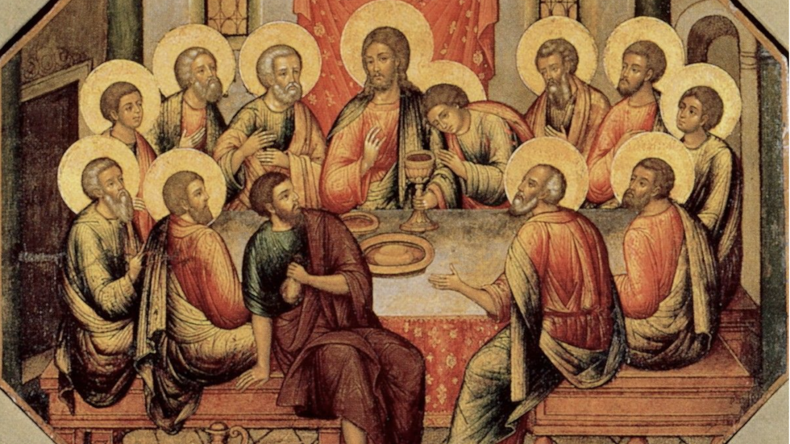

«Причащение апостолов» и «Тайная Вечеря»
— в чем различие?
Вопросы мастерам о церковном искусстве. Журнал «Фома», октябрь 2016
год
Икона «Тайная Вечеря» есть в каждом храме. Ее трудно не заметить: как
правило, она располагается прямо над Царскими вратами. На ней мы видим
Христа и апостолов за пасхальной трапезой.

На фото вреска храма Рождества богородицы в Яролсавле XVIII века
Последнего легко узнать среди апостолов: Иуда тянется рукой через стол
или собирается уходить, иногда пряча за спиной, иногда прижимая
к груди мешочек с тридцатью сребрениками. Мы легко найдем апостола
Иоанна Богослова: он рядом со Христом, как сказано в Евангелии: один
же из учеников Его, которого любил Иисус, возлежал у груди Иисуса.
Позы и лики апостолов полны драматизма, ученики напряженно смотрят
друг на друга и на Иисуса, вопрошая: не я ли, Господи?
Икона «Тайная Вечеря» несет в себе несколько смыслов, в том числе
благодаря своему расположению в храме. Это не только исторический
сюжет, но и указание на непрерывность совершения в Церкви таинства
Причащения: с апостольских времен до XXI века и далее Евхаристия
объединяет верующих друг с другом и со Христом.
Литургический смысл этого события более полно выражен в другой
иконографии, развивавшейся параллельно с «Тайной Вечерей». Она так
и называется — «Евхаристия» или «Причащение апостолов». Как правило,
«Причащение апостолов» помещают на восточной стене алтаря — прихожане
видят его, когда открыты Царские врата. Так, в соборе Спаса-на-Крови
в Санкт-Петербурге виден центр большой мозаичной композиции в алтаре:
Христос и склонившиеся к нему апостолы Петр и Павел.
На иконе «Причащение» нет возлежащих или восседающих, нет трапезы как
таковой. В центре композиции изображен Христос у престола —
Первосвященник, подающий Святые Дары шествующим к нему апостолам.
Рядом со Христом часто изображают ангелов в диаконском облачении.
Первыми в ряду апостолов стоят Петр и Павел. Да, Павла не было на
Тайной Вечери, он и апостолом стал уже после Пятидесятницы, но здесь
икона изображает литургию Небесную, и Павел как первоверховный
апостол — полноправный ее участник.
Можно сказать, что «Тайная Вечеря» и «Евхаристия» — это две разные,
но родные иконы, ведь обе говорят нам о незыблемости и важности
таинства Причащения.